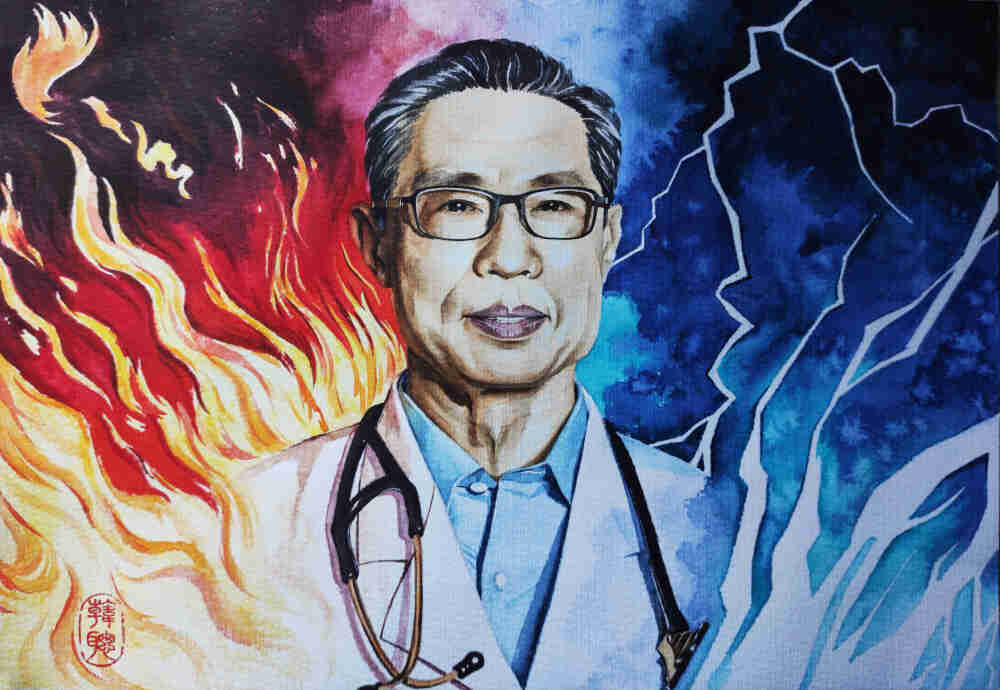

英雄人物
我们挺过来了

致敬钟南山
67岁的钟南山被任命为广东省“非典型肺炎”医疗救护专家指导小组组长，奋战在第一线，在疫情日渐猖獗的情况下，他却让大家把重病患者都送到他这里来，
用行动诠释了什么是医者仁心。为了尽早发现治愈的办法，他冒着被传染的危险，坚持近距离观察患者，在连续工作30多个小时之后，他病倒了，高烧不退，当时怀疑是非典。为了保证大家的安全，
也为了不打击大家抗击非典的士气，他决定在家输液，条件简陋，长钉往门框角上一钉就成了简易的输液架，就这样，他连续输了5天液后，肺部阴影消失，仅休息了3天之后，他又重新回到了工作岗位上。
最终，他和他的团队不断摸索，得到了行之有效的治疗方案，并被各大医院采用，在当年8月，非典得到了有效控制，最终打赢了那场残酷的战争。